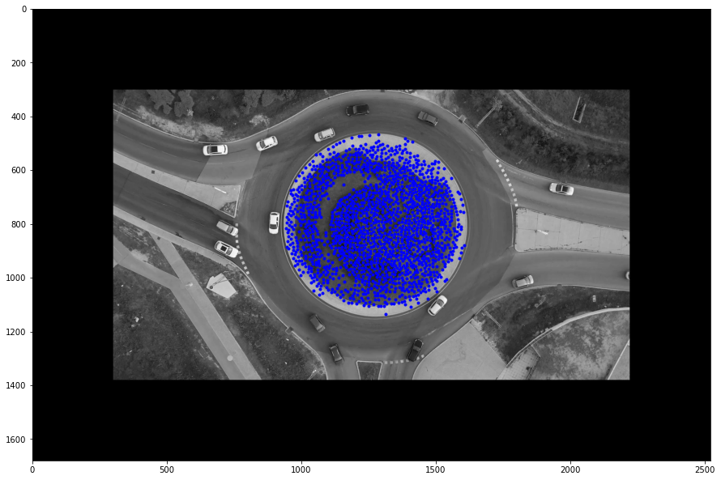

Computer Vision: Roundabout
android project development and design, This app is a collaborative recipe book You can log in as a guest and be impressed by the app, but in order to upload recipes and give comments and ratings, you must register and log in.

Computer Vision Project: Roundabout
Submited By: Aaron Leviashvili and Shay Mualem
import matplotlib.pyplot as plt
import numpy as np
import random
import cv2
print(cv2.__version__)
plt.rc('image', cmap='gray') # set the default color-map of plt.image() to 'gray'
plt.rc('figure', figsize=[15,15]) # set a bigger default figure size4.5.0
Part 1: Video Stabilization
Main Algorithm: Calculating Optical flow between two frames and stabilizing the image against the rotation of the image.
Pipeline is outlined in the following cells.
# Initializing capture of the video
cap = cv2.VideoCapture('P1_roundabout.mp4')
# Parameters for the stabilized output video
W = int(cap.get(cv2.CAP_PROP_FRAME_WIDTH))
H = int(cap.get(cv2.CAP_PROP_FRAME_HEIGHT))
FPS = cap.get(cv2.CAP_PROP_FPS)
fourcc = cv2.VideoWriter_fourcc(*'mp4v')
# Zero Padding parameter
N = 300
W = W + 2*N
H = H + 2*N
# Initializing video writing
out = cv2.VideoWriter('P1_roundabout_stabilized.mp4',fourcc, FPS, (W,H))# Parameters for corner detection
feature_params = dict( maxCorners = 3000,
qualityLevel = 0.01,
minDistance = 10,
blockSize = 5 )
# Parameters for optical flow
lk_params = dict( winSize = (10,10),
maxLevel = 5,
criteria = (cv2.TERM_CRITERIA_EPS | cv2.TERM_CRITERIA_COUNT, 10, 0.03))ret, firstFrame = cap.read()
# For demonstration puprposes we skip a few frames
for _ in range(8):
ret, secondFrame = cap.read()
firstFrame = cv2.copyMakeBorder(firstFrame, N, N, N, N, cv2.BORDER_CONSTANT)
secondFrame = cv2.copyMakeBorder(secondFrame, N, N, N, N, cv2.BORDER_CONSTANT)
firstFrame_gray = cv2.cvtColor(firstFrame, cv2.COLOR_BGR2GRAY)
secondFrame_gray = cv2.cvtColor(secondFrame, cv2.COLOR_BGR2GRAY)
# Smoothing out the image for canny edge detector
firstFrame_blur = cv2.GaussianBlur(firstFrame_gray,(0,0),2)
# Detecting the circles in the image
firstFrame_circles = cv2.HoughCircles(firstFrame_blur,method=cv2.HOUGH_GRADIENT,dp=1,minDist=40,
param1=100,param2=20,minRadius=340,maxRadius=345)
# Converting the resulting image from float32 type to int
firstFrame_circles = firstFrame_circles.astype(np.int)
# Converting the image that was loaded in grayscale back to it's original RGB form
firstFrame_rgb = cv2.cvtColor(firstFrame_gray, cv2.COLOR_GRAY2RGB)
# Drawing the detected circles over the image
for (x,y,r) in firstFrame_circles[0]:
cv2.circle(firstFrame_rgb,(x,y),r,(0,0,255),3)
plt.imshow(firstFrame_rgb)<matplotlib.image.AxesImage at 0x177a5b2fbe0>
# Creating the Image mask
centerMask = np.zeros(firstFrame.shape, dtype=np.uint8)
for (x,y,r) in firstFrame_circles[0]:
cv2.circle(centerMask,(x,y),r,(255,255,255),-1)
centerMask = cv2.cvtColor(centerMask, cv2.COLOR_BGR2GRAY)
plt.imshow(centerMask)<matplotlib.image.AxesImage at 0x177a5c1dfd0>
# First We detect good features to track in the first frame
firstFramePoints = cv2.goodFeaturesToTrack(firstFrame_gray, mask = centerMask, **feature_params)
plt.imshow(firstFrame_gray)
plt.plot(firstFramePoints[:,0,0], firstFramePoints[:,0,1],'.b')[<matplotlib.lines.Line2D at 0x177a85450d0>]
# Now we calculate optical flow of the points from the first frame to the second
secondFramePoints, status, err = cv2.calcOpticalFlowPyrLK(firstFrame_gray, secondFrame_gray,
firstFramePoints, None, **lk_params)
canvas = secondFrame.copy()
# Let's draw the matches between the points
for (p0,p1) in zip(firstFramePoints,secondFramePoints):
x0,y0 = p0.squeeze().astype(np.int)
x1,y1 = p1.squeeze().astype(np.int)
canvas = cv2.circle(canvas,(x0,y0),7,(0,0,255),-1)
canvas = cv2.line(canvas, (x0,y0),(x1,y1), (0,255,255), 2)
canvas = cv2.circle(canvas,(x1,y1),7,(255,0,0),-1)
plt.imshow(cv2.cvtColor(canvas,cv2.COLOR_BGR2RGB))<matplotlib.image.AxesImage at 0x177a901d490>
# After we have the both sets of points we can calculate the transformation
M, mask = cv2.findHomography(secondFramePoints, firstFramePoints, cv2.RANSAC,30.0)
# Applying the transformation to match the second frame to the first
h,w = firstFrame_gray.shape
secondFrame_warp = cv2.warpPerspective(secondFrame, M, (w,h))
# Splicing the two images together
splice = cv2.addWeighted(secondFrame_warp,0.5,firstFrame,0.5,0)
plt.figure(figsize=(20,20))
# We can observe in this image that scenery is matched correctly and the trajectory of the cars is smooth
plt.imshow(cv2.cvtColor(splice,cv2.COLOR_BGR2RGB), cmap='gray')<matplotlib.image.AxesImage at 0x177a929deb0>
cap = cv2.VideoCapture('P1_roundabout.mp4')
W = int(cap.get(cv2.CAP_PROP_FRAME_WIDTH))
H = int(cap.get(cv2.CAP_PROP_FRAME_HEIGHT))
FPS = cap.get(cv2.CAP_PROP_FPS)
fourcc = cv2.VideoWriter_fourcc(*'mp4v')
# Zero Padding parameter
N = 300
W = W + 2*N
H = H + 2*N
# Initializing video writing
out = cv2.VideoWriter('P1_roundabout_stabilized.mp4',fourcc, FPS, (W,H))
# Parameters for detecting initial tracking features (corners)
feature_params = dict( maxCorners = 3000,
qualityLevel = 0.01,
minDistance = 10,
blockSize = 5 )
# Parameters for Optical Flow
lk_params = dict( winSize = (10,10),
maxLevel = 5,
criteria = (cv2.TERM_CRITERIA_EPS | cv2.TERM_CRITERIA_COUNT, 10, 0.03))
# Taking the first frame and finding good points to track in it
ret, F0 = cap.read()
F0 = cv2.copyMakeBorder(F0, N, N, N, N, cv2.BORDER_CONSTANT)
F0_gray = cv2.cvtColor(F0, cv2.COLOR_BGR2GRAY)
pts0 = cv2.goodFeaturesToTrack(F0_gray, mask = centerMask, **feature_params)
out.write(F0)
ret,F1 = cap.read()
F1 = cv2.copyMakeBorder(F1, N, N, N, N, cv2.BORDER_CONSTANT)
F1_gray = cv2.cvtColor(F1, cv2.COLOR_BGR2GRAY)
pts1, status, err = cv2.calcOpticalFlowPyrLK(F0_gray, F1_gray, pts0, None, **lk_params)
M, mask = cv2.findHomography(pts1, pts0, cv2.RANSAC,30.0)
h,w = F0_gray.shape
F1_warp = cv2.warpPerspective(F1, M, (w,h))
out.write(F1_warp)
if ret:
while True:
ret,F2 = cap.read()
F2 = cv2.copyMakeBorder(F2, N, N, N, N, cv2.BORDER_CONSTANT)
if ret==True:
F2_gray = cv2.cvtColor(F2, cv2.COLOR_BGR2GRAY)
# Calculating Optical Flow
pts2, status, err = cv2.calcOpticalFlowPyrLK(F1_gray, F2_gray, pts1, None, **lk_params)
M, mask = cv2.findHomography(pts2, pts0, cv2.RANSAC,30.0)
h,w = F0_gray.shape
F2_warp = cv2.warpPerspective(F2, M, (w,h))
if ret==True:
cv2.imshow('WINDOW_NAME', F2_warp)
out.write(F2_warp)
if (cv2.waitKey(1) & 0xff == 27): # ESC key pressed?
break
F1 = F2
F1_gray = F2_gray
pts1 = pts2
else:
break
cap.release() # release input video
out.release() # release output video
cv2.destroyAllWindows() # delete output window
cv2.waitKey(1);Part 2: Vehicle Tracking
First the vehicles are isolated from the background using absolute frame difference (After Stabilization the vehicles are the only moving thing in the video.)
Then the black and white Images are used as mask for Shi-Tomasi GoodFeaturesToTrack and keypoints are detected only on the vehicles themselves.
Pipeline is outlined in the following cells.
# Setting up the parameters for the two algorithms
# Parametrs for detecting initial tracking features (corners)
feature_params = dict( maxCorners = 10,
qualityLevel = 0.09,
minDistance = 10,
blockSize = 5 )
# Parameters for Optical Flow
lk_params = dict( winSize = (10,10),
maxLevel = 5,
criteria = (cv2.TERM_CRITERIA_EPS | cv2.TERM_CRITERIA_COUNT, 10, 0.03))# Initializing the capture
cap = cv2.VideoCapture('P1_roundabout_stabilized.mp4')
# Initializing VIdeo Writing
W = int(cap.get(cv2.CAP_PROP_FRAME_WIDTH))
H = int(cap.get(cv2.CAP_PROP_FRAME_HEIGHT))
FPS = cap.get(cv2.CAP_PROP_FPS)
fourcc = cv2.VideoWriter_fourcc(*'mp4v')
# Initializing video writing
out = cv2.VideoWriter('P1_roundabout_stabilized_With_Vehicle_Tracking.mp4',fourcc, FPS, (W,H))# Taking the first two frames from the video
ret, F0 = cap.read()
ret, F1 = cap.read()
F0_gray = cv2.cvtColor(F0, cv2.COLOR_BGR2GRAY)
F1_gray = cv2.cvtColor(F1, cv2.COLOR_BGR2GRAY)
# Calculating absolute difference between the two frames
FirstFrameDiff = cv2.absdiff(F0_gray,F1_gray)
plt.imshow(FirstFrameDiff)<matplotlib.image.AxesImage at 0x177a9570760>
# Blurring the Image and thresholding to get the outlines of the moving cars
FirstBlur = cv2.GaussianBlur(FirstFrameDiff, (5,5), 0)
_, FirstThresh = cv2.threshold(FirstBlur, 50, 255, cv2.THRESH_BINARY)
plt.imshow(FirstThresh)<matplotlib.image.AxesImage at 0x1779f834c40>
# Applying morphology to enhance the contours of the cars, the goal is to cover the car as much as possible
kernel = np.ones((5,5),np.uint8)
dilate = cv2.dilate(FirstThresh, kernel, iterations=2)
closing = cv2.morphologyEx(dilate, cv2.MORPH_CLOSE, kernel, iterations = 10)
contour_mask = cv2.dilate(closing, None, iterations=3)
plt.imshow(contour_mask)<matplotlib.image.AxesImage at 0x1779f894790>
# In order to drown out the white frame outlines caused by frame rotation a mask is created
# Thresholded frame outline (A white square)
_, FrameOutlines = cv2.threshold(F1_gray, 1, 255, cv2.THRESH_BINARY)
# The white square is minimized to fit the frame and exclude the white rotation lines
kernel = np.ones((5, 5), np.uint8)
FrameOutlines = cv2.dilate(FrameOutlines, kernel)
FrameOutlines_eroded = cv2.erode(FrameOutlines,kernel)
FrameOutlines_eroded_demo = cv2.erode(FrameOutlines,kernel)
for _ in range(50): # Here erosion is exaggerated for demonstration purposes
FrameOutlines_eroded_demo = cv2.erode(FrameOutlines_eroded_demo,kernel)
for _ in range(10): # This is enough to drown out the noise
FrameOutlines_eroded = cv2.erode(FrameOutlines_eroded,kernel)
outlinesCleared = cv2.bitwise_and(FrameOutlines_eroded, F1_gray)
plt.subplot(2,2,1)
plt.imshow(FrameOutlines)
plt.subplot(2,2,2)
plt.imshow(FrameOutlines_eroded_demo)
plt.subplot(2,2,3)
plt.imshow(F1_gray)
plt.subplot(2,2,4)
plt.imshow(outlinesCleared)<matplotlib.image.AxesImage at 0x177ab0e1130>
# Applied on the contour_mask
contour_mask = cv2.bitwise_and(contour_mask, FrameOutlines_eroded)
plt.imshow(contour_mask)<matplotlib.image.AxesImage at 0x1779f385cd0>
# Finding contours in the first image
Contours, _ = cv2.findContours(contour_mask, cv2.RETR_TREE, cv2.CHAIN_APPROX_SIMPLE)
idLabelMask = cv2.cvtColor(contour_mask,cv2.COLOR_GRAY2BGR)
# Information about the Cars
cars = [] # Contains list of keypoints (Features of a car), color and ID number
idCounter = 0 # How many unique ID's so far have been given
# Everything we need for vizualizing the tracking
canvas = np.zeros_like(F0)
idBoxOffset = 10
idBoxSize = 65
# Treating each contour as a car, filtering the keypoints and giving it ID
for ctrIdx in range(len(Contours)):
if cv2.contourArea(Contours[ctrIdx]) > 1400:
idCounter += 1
ID = idCounter # Assigning unique ID to the car
color = (random.randint(0, 255), random.randint(0, 255), random.randint(0, 255)) # Generating Random tracking color
# Detecting features of the car
oneCarMask = np.zeros_like(contour_mask)
oneCarMask = cv2.drawContours(oneCarMask, Contours, ctrIdx, (255, 255, 255), -1)
carFeatures = cv2.goodFeaturesToTrack(F0_gray, mask = oneCarMask, **feature_params)
# Appending the data to the cars list
cars.append([ID,color,carFeatures])
# Calculating the median point to draw the ID square (median is better, average might drift)
med = np.median(carFeatures, axis=(0,1))
cx = int(med[0])
cy = int(med[1])
# Drawing the ID square and the points on the ID label canvas
pts = np.int32([ [cx + idBoxOffset,cy - idBoxSize],[cx + idBoxSize + 50,cy - idBoxSize],
[cx + idBoxSize + 50,cy - idBoxOffset],[cx + idBoxOffset,cy - idBoxOffset] ]).reshape(-1,1,2)
idLabelCanvas = cv2.polylines(canvas,[pts],True,(255,0,0),2, cv2.LINE_AA)
idLabelCanvas = cv2.fillPoly(canvas,[pts],(255,0,0))
for p0 in carFeatures:
x0,y0 = p0.squeeze().astype(np.int)
canvas = cv2.circle(canvas,(x0,y0),8,color,-1) # new points
canvas = cv2.putText(canvas,'ID: ' + str(ID), org = (cx + 20, cy - 20),
fontFace = cv2.FONT_HERSHEY_PLAIN, fontScale = 2, color = (0,255,255), thickness = 3,lineType = 1)
plt.imshow(cv2.cvtColor(canvas,cv2.COLOR_BGR2RGB))<matplotlib.image.AxesImage at 0x177ae04a130>
F0_gray = F1_gray
# Fast Forward a few frames and now try to find the same cars
for _ in range(5):
ret,F1 = cap.read()
F1_gray = cv2.cvtColor(F1, cv2.COLOR_BGR2GRAY)
# Frame Difference and morphology
FrameDiff = cv2.absdiff(F0_gray,F1_gray)
Blur = cv2.GaussianBlur(FrameDiff, (5,5), 0)
_, Thresh = cv2.threshold(Blur, 50, 255, cv2.THRESH_BINARY)
kernel = np.ones((5,5),np.uint8)
dilate = cv2.dilate(Thresh, kernel, iterations=2)
closing = cv2.morphologyEx(dilate, cv2.MORPH_CLOSE, kernel, iterations = 10)
contour_mask = cv2.dilate(closing, None, iterations=3)
# This mask allows us to drown out the frame rotation noise so we can focus only on the cars themselves.
_, carMask = cv2.threshold(F1_gray, 1, 255, cv2.THRESH_BINARY)
kernel = np.ones((5, 5), np.uint8)
carMask = cv2.dilate(carMask, kernel)
for i in range(10):
carMask = cv2.erode(carMask,kernel)
contour_mask = cv2.bitwise_and(contour_mask, carMask)
# Converting contour mask to color for demo purposes (Not part of the algorithm)
contour_mask = cv2.cvtColor(contour_mask,cv2.COLOR_GRAY2BGR)
for i in range(len(cars)):
oldPoints = cars[i][2]
trackingColor = cars[i][1]
ID = cars[i][0]
newPoints, status, err = cv2.calcOpticalFlowPyrLK(F0_gray, F1_gray, oldPoints, None, **lk_params)
# Calculating the median point to draw the ID square (median is better, average might drift)
med = np.median(newPoints, axis=(0,1))
cx = int(med[0])
cy = int(med[1])
# Deleting the points that are outside the frame outlines or that get stuck somewhere
for p1,stat in zip(newPoints,status):
x1,y1 = p1.squeeze().astype(np.int)
if(np.absolute(x1 - cx) > 50 or np.absolute(y1 - cy) > 50):
stat[0] = 0
else:
x1,y1 = p1.squeeze().astype(np.int)
contour_mask = cv2.circle(contour_mask,(x1,y1),8,trackingColor,-1) # new points
# Removing irrelevant points
newPoints = newPoints[status[:,0]==1]
# Drawing the ID square on the ID label canvas
pts = np.int32([ [cx + idBoxOffset,cy - idBoxSize],[cx + idBoxSize + 50,cy - idBoxSize],
[cx + idBoxSize + 50,cy - idBoxOffset],
[cx + idBoxOffset,cy - idBoxOffset] ]).reshape(-1,1,2)
contour_mask = cv2.polylines(contour_mask,[pts],True,(255,0,0),2, cv2.LINE_AA)
contour_mask = cv2.fillPoly(contour_mask,[pts],(255,0,0))
contour_mask= cv2.putText(contour_mask,'ID: ' + str(ID), org = (cx + 20, cy - 20),
fontFace = cv2.FONT_HERSHEY_PLAIN, fontScale = 2, color = (0,255,255), thickness = 3,lineType = 1)
plt.imshow(cv2.cvtColor(contour_mask,cv2.COLOR_BGR2RGB))<matplotlib.image.AxesImage at 0x177a9d34af0>
The final tracking algorithm running on video:
First cell is the setup using the first two frames, second cell analyzes the rest of the video.
# Setting up the parameters for the two algorithms
# Params for corner detection
feature_params = dict( maxCorners = 10,
qualityLevel = 0.09,
minDistance = 10,
blockSize = 5 )
# Parameters for optical flow
lk_params = dict( winSize = (10,10),
maxLevel = 5,
criteria = (cv2.TERM_CRITERIA_EPS | cv2.TERM_CRITERIA_COUNT, 10, 0.03))
# Initializing the capture
cap = cv2.VideoCapture('P1_roundabout_stabilized.mp4')
# Initializing VIdeo Writing
W = int(cap.get(cv2.CAP_PROP_FRAME_WIDTH))
H = int(cap.get(cv2.CAP_PROP_FRAME_HEIGHT))
FPS = cap.get(cv2.CAP_PROP_FPS)
fourcc = cv2.VideoWriter_fourcc(*'mp4v')
out = cv2.VideoWriter('P1_roundabout_stabilized_With_Vehicle_Tracking.mp4',fourcc, FPS, (W,H))
# Capturing the first two frames and converting their color to gray
ret, F0 = cap.read()
ret, F1 = cap.read()
F0_gray = cv2.cvtColor(F0, cv2.COLOR_BGR2GRAY)
F1_gray = cv2.cvtColor(F1, cv2.COLOR_BGR2GRAY)
# This mask allows us to drown out the frame rotation noise so we can focus only on the cars themselves.
_, carMask = cv2.threshold(F1_gray, 1, 255, cv2.THRESH_BINARY) # We get a white rectangle in the middle.
kernel = np.ones((5, 5), np.uint8)
carMask = cv2.dilate(carMask, kernel) # Dilation will remove any small imperfections in the rectangle so they don't compound.
for _ in range(10):
carMask = cv2.erode(carMask,kernel) # Erosion of the mask with a few passes allows us to make the rectangle smaller
# Calculating absolute difference between the frames to locate moving objects
FirstFrameDiff = cv2.absdiff(F0_gray,F1_gray)
# Preparing the frame difference image to be processed
FirstBlur = cv2.GaussianBlur(FirstFrameDiff, (5,5), 0)
_, FirstThresh = cv2.threshold(FirstBlur, 50, 255, cv2.THRESH_BINARY)
# Applying morphology to bring out the contours of moving objects even more
kernel = cv2.getStructuringElement(cv2.MORPH_ELLIPSE,(5,5))
dilate = cv2.dilate(FirstThresh, kernel, iterations=2)
closing = cv2.morphologyEx(dilate, cv2.MORPH_CLOSE, kernel, iterations = 10)
contour_mask = cv2.dilate(closing, kernel, iterations=3)
# Drowning out frame rotation noise
contour_mask = cv2.bitwise_and(contour_mask, carMask)
# Once the contour_mask contains only moving cars we can proceed to detect them
Contours, _ = cv2.findContours(contour_mask, cv2.RETR_TREE, cv2.CHAIN_APPROX_SIMPLE)
# Information about the Cars
cars = [] # will be a list of car objects, each car will have keypoints (Features of a car), color and ID number
idCounter = 0 # Keeping track of unique ID's given
# Everything we need for vizualizing
trackingPointCanvas = np.zeros_like(F0)
idLabelCanvas = np.zeros_like(F0)
idBoxOffset = 10
idBoxSize = 65
# Treating each contour as a car
for ctrIdx in range(len(Contours)):
if cv2.contourArea(Contours[ctrIdx]) > 1400:
idCounter += 1
ID = idCounter # Assigning unique ID to the car
color = (random.randint(0, 255), random.randint(0, 255), random.randint(0, 255)) # Generating Random tracking color
# Detecting features of the car
oneCarMask = np.zeros_like(contour_mask)
oneCarMask = cv2.drawContours(oneCarMask, Contours, ctrIdx, (255, 255, 255), -1)
carFeatures = cv2.goodFeaturesToTrack(F0_gray, mask = oneCarMask, **feature_params)
# Appending the data to the cars list
cars.append([ID,color,carFeatures])
# Calculating the median point to draw the ID square (median is better, average might drift)
med = np.median(newPoints, axis=(0,1))
cx = int(med[0])
cy = int(med[1])
# Drawing the ID square on the ID label canvas
pts = np.int32([ [cx + idBoxOffset,cy - idBoxSize],[cx + idBoxSize + 50,cy - idBoxSize],
[cx + idBoxSize + 50,cy - idBoxOffset],[cx + idBoxOffset,cy - idBoxOffset] ]).reshape(-1,1,2)
idLabelCanvas = cv2.polylines(idLabelCanvas,[pts],True,(255,0,0),2, cv2.LINE_AA)
idLabelCanvas = cv2.fillPoly(idLabelCanvas,[pts],(255,0,0))
canvas2idLabelCanvas= cv2.putText(idLabelCanvas,'ID: ' + str(ID), org = (cx + 20, cy - 20),
fontFace = cv2.FONT_HERSHEY_PLAIN, fontScale = 2, color = (0,255,255), thickness = 3,lineType = 1)F0_gray = F1_gray
while(1):
ret,F1 = cap.read()
if ret==True:
F1_gray = cv2.cvtColor(F1, cv2.COLOR_BGR2GRAY)
idLabelCanvas = np.zeros_like(F1)
# This mask allows us to drown out the frame rotation noise so we can focus only on the cars themselves.
_, carMask = cv2.threshold(F1_gray, 1, 255, cv2.THRESH_BINARY)
kernel = np.ones((5, 5), np.uint8)
carMask = cv2.dilate(carMask, kernel)
pointFade = carMask.copy()
for i in range(10):
carMask = cv2.erode(carMask,kernel)
if i%2 == 0:
pointFade = cv2.erode(pointFade,kernel)
# Calculating using frame difference the new contours of the cars
FrameDiff = cv2.absdiff(F0_gray,F1_gray)
Blur = cv2.GaussianBlur(FrameDiff, (5,5), 0)
_, Thresh = cv2.threshold(Blur, 50, 255, cv2.THRESH_BINARY)
kernel = cv2.getStructuringElement(cv2.MORPH_ELLIPSE,(5,5))
dilate = cv2.dilate(Thresh, kernel, iterations=1)
closing = cv2.morphologyEx(dilate, cv2.MORPH_CLOSE, kernel, iterations = 10)
contour_mask = cv2.dilate(closing, kernel, iterations=3)
contour_mask = cv2.bitwise_and(contour_mask, carMask)
i = 0
# Tracking each car
while i < len(cars):
oldPoints = cars[i][2]
trackingColor = cars[i][1]
ID = cars[i][0]
newPoints, status, err = cv2.calcOpticalFlowPyrLK(F0_gray, F1_gray, oldPoints, None, **lk_params)
# Calculating the median point to draw the ID square (median is better, average might drift)
med = np.median(newPoints, axis=(0,1))
cx = int(med[0])
cy = int(med[1])
for p1,stat in zip(newPoints,status):
x1,y1 = p1.squeeze().astype(np.int)
# Deleting the points that are outside the frame outlines or that get stuck somewhere
if(np.absolute(x1 - cx) > 50 or np.absolute(y1 - cy) > 50 or x1 > W or y1 > H or
pointFade[y1][x1] == 0):
stat[0] = 0
else:
contour_mask = cv2.circle(contour_mask, (x1,y1),120,0,-1) # Erasing the car from detection
# Updating the points that are still left
newPoints = newPoints[status[:,0]==1]
if len(newPoints) < 2:
cars.remove(cars[i])
else:
cars[i][2] = newPoints
i += 1
# Drawing a tracking circle for the car
trackingPointCanvas = cv2.circle(trackingPointCanvas,(cx,cy),18,trackingColor,-1)
# Drawing the ID square on the ID label canvas
pts = np.int32([ [cx + idBoxOffset,cy - idBoxSize],[cx + idBoxSize + 50,cy - idBoxSize],
[cx + idBoxSize + 50,cy - idBoxOffset],
[cx + idBoxOffset,cy - idBoxOffset] ]).reshape(-1,1,2)
idLabelCanvas = cv2.polylines(idLabelCanvas,[pts],True,(255,0,0),2, cv2.LINE_AA)
idLabelCanvas = cv2.fillPoly(idLabelCanvas,[pts],(255,0,0))
canvas2idLabelCanvas= cv2.putText(idLabelCanvas,'ID: ' + str(ID), org = (cx + 20, cy - 20),
fontFace = cv2.FONT_HERSHEY_PLAIN, fontScale = 2, color = (0,255,255), thickness = 3,lineType = 1)
Contours, _ = cv2.findContours(contour_mask, cv2.RETR_TREE, cv2.CHAIN_APPROX_SIMPLE)
for ctrIdx in range(len(Contours)):
if cv2.contourArea(Contours[ctrIdx]) > 1400:
idCounter += 1
ID = idCounter
color = (random.randint(0, 255), random.randint(0, 255), random.randint(0, 255))
oneCarMask = np.zeros_like(contour_mask)
oneCarMask = cv2.drawContours(oneCarMask, Contours, ctrIdx, (255, 255, 255), -1)
carFeatures = cv2.goodFeaturesToTrack(F0_gray, mask = oneCarMask, **feature_params)
cars.append([ID,color,carFeatures])
# visualize the results
trackingPointCanvas = np.uint8(trackingPointCanvas*0.99) # Fading out older points
trackingPointCanvas = cv2.GaussianBlur(trackingPointCanvas, (5,5), 0) # Blurring trails
final = cv2.addWeighted(F1, 1, trackingPointCanvas, 0.5, 0) # Blending the Images
final = cv2.add(final, idLabelCanvas)
cv2.putText(final,'Tracking ' + str(len(cars)) + ' Vehicles', org = (80,80),
fontFace = cv2.FONT_HERSHEY_PLAIN,
fontScale = 3,
color = (0,255,255),
thickness = 3,
lineType = 1)
cv2.imshow('ctr',contour_mask)
cv2.imshow('final',final)
out.write(final)
# Updating the previous frame
F0_gray = F1_gray
k = cv2.waitKey(1) & 0xff
if k == 27:
break
else: # No more frames to read
break
cv2.destroyAllWindows()
cap.release()
out.release()
cv2.waitKey(1)-1